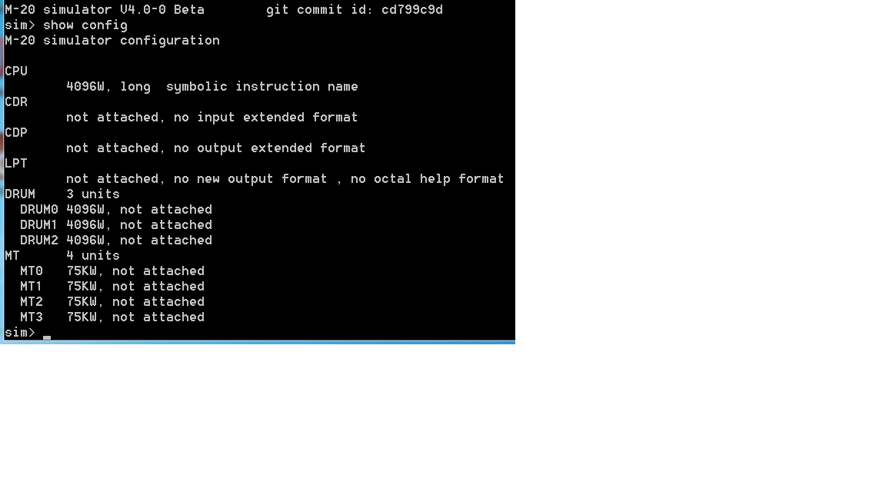
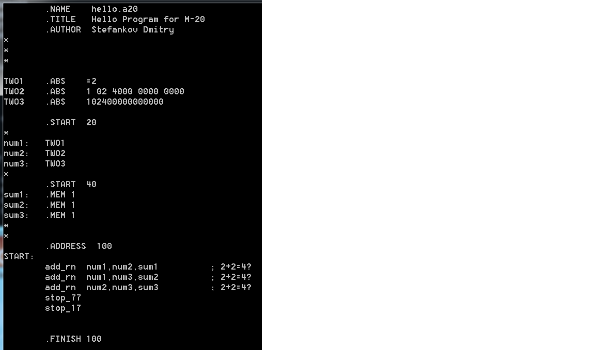

Эмулятор ЭЦВМ М-20
Последнее изменение: $Date: 2015-09-15 13:05:16+03 $
|
Общee описание
Выложены исходные тексты эмулятора ЭЦВМ М-20 Дмитрия Стефанкова.
Приводятся результаты расчетов по различным программам для ЭЦВМ М-20.
Приводятся подробные технические данные по ЭЦВМ М-20.
Приводится список литературы по ЭЦВМ М-20.
Приводятся общие сведения по эмуляторам для ЭЦВМ М-20.
Выложены фотографии и рисунки из книг В.Ф.Ляшенко по ЭЦВМ М-20.
Приводятся некоторые исторические факты с комментариями.
Выпуск эмулятора ЭЦВМ М-20 посвящен памяти С.А.Лебедева, М.Р.Шуры-Буры и
других советских инженеров и программистов эпохи советских ЭЦВМ первого
и второго поколения.
Разделы
- m20_doc.zip 1464 KB Эмулятор ЭЦВМ М-20: документация (на русском языке) [Обновлено: 10-Мар-2015]
- m20_sources.zip 1174 KB Эмулятор ЭЦВМ М-20: исходные тексты [Обновлено: 10-Мар-2015]
- m20_binaries.zip 2339 KB Эмулятор ЭЦВМ М-20: бинарная сборка для Microsoft Windows [Обновлено: 10-Мар-2015]
- m20_results.zip 1586 KB Эмулятор ЭЦВМ М-20: результаты запусков и тестов [Обновлено: 10-Мар-2015]
Контрольные суммы для всех архивов можно найти в MD5SUMS и SHA1SUMS.
Скриншот 1. Конфигурация ЭЦВМ М-20 в эмуляторе
Скриншот 2. Загрузка программы М-20 с перфокарты
Скриншот 3. Интерактивный сеанс в эмуляторе М-20
Скриншот 4. Расчет параболы для М-20 (сравнение результатов с М-1)
Скриншот 5. Программа для М-20 на автокоде (ассемблере)
Скриншот 1.

|
Скриншот 2.

|
Скриншот 3.

|
Скриншот 4.

|
Скриншот 5.

|
1. В.Ф. Ляшенко. "Программирование для ЦВМ с системой команд типа М-20. Изд. 2-е. 1974, Москва, «Советское радио».
2. В.Ф. Ляшенко. "Программирование для цифровыx вычислительных машин М-20 БЭСМ-3М БЭСМ-4 М-220". 1967, Москва, «Советское радио».
3. В.Ф. Ляшенко. "Программирование для электронной цифровой вычислительной машины М-20". 1963, Москва, «Советское радио».
4. В.А.Маханова (тех.редактор) "Комплексный тест". 1963, Ленинград, Ленинградская Военная Инженерная Академия.
5. под общей редакцией М.Р.Шура-Бура. "Библиотека стандартных программ". 1961, Москва, ЦБТИ.
6. С.А. Лебедев, М.К. Сулим, А.Ф. Кондрашов, В.И. Левшин, А.А. Соловьев, И.В. Кутеянцев, А.А. Алексеев, Э.И. Кривоносов, М.В. Тяпкин.
"Универсальная автоматическая быстродействующая цифровая вычислительная машина М-20. Техническое описание". В 4-х томах. 1961,1962, Москва, ЦБТИ.
7. С.А. Лебедев, М.К. Сулим, А.Ф. Кондрашов, В.И. Левшин, А.А. Соловьев.
"Универсальная автоматическая быстродействующая цифровая вычислительная машина М-20. Техническое описание.". В 2-х томах. 1965, Москва, ЦБТИ.
8. М.Р. Шура-Бура, В.С. Штаркман. "Вычислительная машина М-20. Инструкция по математической эксплуатации". 1962, Москва, ЦБТИ.
Более подробный список литературы можно найти в описании проекта эмулятора М-20.
* Элементная база: ~4500 электровакуумных ламп, ~35000 полупроводниковых диодов
* Тактовая частота: 665 кГц (один импульс за 1,5 мксек)
* Система представления чисел: двоичная с учетом порядка (с плавающей запятой), 45 разрядов на код числа
* Разрядность вводимых и выводимых десятичных чисел: до 9 разрядов
* Разрядность в двоичной системе: 36 разрядов (мантисса), 7 разрядов (порядок числа), 1 разряд (знак числа), 1 разряд (признак числа)
* Диапазон представления чисел: для нормализованных чисел от 2E-64 до 2E+63 (примерно от 10E-19 до 10E+19)
* Точность вычислений: 10-11 десятичных знаков
* Система команд: трехадресная с автоматическим изменением адресов
* Система счисления для чисел при вводе в машину и выводе на печать: десятичная и восьмеричная
* Система счисления для команд при вводе в машину и выводе на печать: восьмеричная
* Разряды команды: 6 разрядов (код операции), 3 разряда (признаки адресов), 3 адреса по 12 разрядов (адреса операндов)
* Скорость выполнения операций (оп/cек): однотактные (40000), сложение (~35000), умножение (~14500), деление(~7500), квадратный корень (~3600)
* Быстродействие машины при автоматической работе: в среднем 20 тыс. операций в секунду
* Внутренняя память: магнитное оперативное запоминающее устройство (МОЗУ)
* Тип МОЗУ: на магнитных (ферритовых) сердечниках, время обращения - 6 микросекунд
* Емкость МОЗУ: 4095 45-разрядных слов (1 ферритовый куб)
* Адресация МОЗУ: 4096 слов. Нулевой адрес не используется, а при наличии его в коде команды в МОЗУ поступает машинный ноль.
* Внешние запоминающие устройства: магнитный барабан (МБ), магнитная лента (МЛ)
* Емкость накопителей (МБ): 12288 45-разрядных двоичных кодов (3 барабана по 4096 кодов в каждом)
* Емкость накопителей (МЛ): 300000 45-разрядных двоичных кодов (4 магнитофона по 75000 кодов на каждом магнитофоне, плотность записи 1250 кодов/метр)
* Скорость чтения/записи (МБ): 5000 кодов в секунду
* Скорость обмена (МБ): 6400 кодов в секунду (без времени поиска)
* Скорость вращения (МБ): 25 оборотов в секунду
* Скорость чтения/записи (МЛ): 2500-3000 чисел в секунду
* Скорость движения (МЛ): 2 метра в секунду
* Устройства ввода: читающее устройство (ЧУ) с перфокарт, пульт управления (ПУ) машиной
* Скорость ввода исходного материала с перфокарт: 1200 чисел в минуту
* Ввод чисел и команд в машину: автоматический с ЧУ, ручной с пульта управления
* Устройства вывода: электромеханическое быстродействующее печатающее устройство (БПУ), перфорирующее устройство (ПфУ)
* Скорость вывода (БПУ): 1200 чисел в минуту (узкая бумажная лента шириной 80 мм, по одному числу в строке)
* Скорость вывода (ПфУ): 500-600 чисел в минуту (перфокарты)
* Перфокарты: 80-ти колонные
* Буферный регистр (БР): дополнительная специальная секция на одном из МБ емкостью в 512 кодов для автономной печати или перфорации
* Система контроля работоспособности машины: оперативный контроль и профилактический контроль
* Оперативный контроль: с помощью тест-программ
* Профилактический контроль: с помощью изменения режима работы схем
* Режимы работы машины: автоматический (до останова), циклический (останов после каждой команды), одиночный (по управляющим синхроимпульсам)
* Режимы работы МОЗУ: I (главный рабочий), II (наладка, тестирование, профилактика)
* Дополнительное Запоминающее Устройство (ДЗУ): группа из 4-х клавишных регистров на ПУ(применяются для ввода информации в МОЗУ в режиме II)
* Для обеспечения контроля надежности при чтении и записи применяется контрольное суммирование группы кодов
* Занимаемая площадь: до 370 кв.м.
* Потребляемая мощность: 50 кВт, не считая системы охлаждения
* Электропитание: 3-фазное напряжение 220В/380В с частотой 50 Гц (частота 500 Гц вырабатывается для питания накальных цепей ЦВМ)
* Система вентиляции и охлаждения: на входе в машину не выше 13 градусов по Цельсию, на выходе не выше 25 градусов по Цельсию
* Размещение машины (5 залов): главный, устройства подготовки данных, генераторный, устройства охлаждения, лаборатория испытаний и ремонта
* Системное Программное Обеспечение: тесты, комплексные тесты, контрольные задачи
* Прикладное Программное Обеспечение: библиотека стандартных программ (БСП), интерпретирующая система версии 2 (ИС-2)
* БСП: программы вычислений математических функций, ввода/вывода, преобразования форм представления (двоичная, восьмеричная и десятичная), отладки
* Система Стандартных Программ (ССП): альтернативное название БСП
* ИС-2: настраивающий загрузчик и библиотекарь для БСП (в абсолютных адресах)
Дмитрий Стефанков написал первый полный эмулятор ЭЦВМ М-20.
* Полная эмуляция ЭЦВМ М-20 (кроме пульта управления).
* Реализация системы команд, МОЗУ, МБ, МЛ, ЧУ, БПУ, ПфУ, БР, ДЗУ.
* Есть автоматическая загрузка машины с перфокарт при включении питания.
* Есть поддержка вывода на печать и перфорацию.
* Эмулятор проходит комплексный тест.
* Расширенные диагностические возможности для поиска ошибок в программе.
* Есть автокод (ассемблер).
* Реализовано временное профилирование для оценки скорости исполнения программы.
* Есть вспромогательные программы выдачи полного дампа МБ и МЛ.
* Поддержка ИС-2 и CСП/БСП (с подготовленными образами на МБ и МЛ).
* Большое число демонстрационных примеров (реальных и учебных).
* Есть полный комплект документации по установке, сборке проекта и работе с эмулятором.
* Используемые кодировки для программ М-20: ASCII,UTF-8,KOI8-R,CP-866,CP-1251.
* Эмулятор построен на базе общецелевого эмулятора SIMH.
* Эмулятор выполняется в среде Microsoft Windows и в среде Unix/Linux.
Сергей Вакуленко написал первый эмулятор М-20.
* Частичная эмуляция М-20 (система команд, МОЗУ, МБ).
* Есть ассемблер и дизассемблер.
* Эмулятор скорее типа М-20, чем М-20.
* В качестве примеров программ М-20 используются программы из книги Ляшенко 1974 года.
* Есть пример использования ИС-2 и СП-05 для вычисления функции синуса.
* Нет документации.
* Используемая кодировка для программ М-20: UTF-8.
* Эмулятор построен на базе общецелевого эмулятора SIMH.
* Эмулятор выполняется в среде Unux/Linux.
* Ссылка: http://code.google.com/p/m20
* ЭЦВМ М-20 никогда не была самой быстродействующей ЭЦВМ в мире.
* Для СССР это безусловно была замечательная машина.
* Выпуск ЭЦВМ М-20 с поставляемым ПО в виде ИС-2 и ССП был важным моментом в истории развитии советской вычислительной
техники (ВТ), так как впервые пользователи ЭЦВМ получили возможность писать программы по определенным стандартам.
* В истории советской ВТ затем была ЭЦВМ "Арагац", в которой были скопированы программные решения (ИС-А/БСП) и некоторые
аппаратные решения ЭЦВМ М-20.
* Советские инженеры постоянно модифицировали (по разным причинам) ЭЦВМ в своих вычислительных центрах (ВЦ).
Большинство таких изменений были не лучшим образом документированы или часто пропускались в эксплуатационной документации.
* Разработка шахматной программа "Каисса" велась на английской машине ICL-4.
* Разработка шахматной программы на ЭЦВМ М-20 велась в ИТЭФ под руководством А.С.Кронрода.
К большому сожалению, ЭЦВМ М-20 в ИТЭФ также подверглась изменениям и модификациям, о которых мало что известно.
В частности, команды "СТОП" были заменены специализированнымм вычислителями (А.С.Кронрод,Н.И.Бессонов) для
быстрого нахождения возможных шахматных ходов.
Возможно, что были и другие модификации данной машины М-20 для решения специализированных задач.
Пока нет технических документов, которые позволили бы восстановить характер этих изменений (для возможной эмуляции).
Текст шахматной программы ИТЭФ неустановленной версии и даты (опубликованной в Интернете) без сопровождающей документации
также не позволяет пока решить задачу успешного запуска данной программы.
Фото 1. Обложка книги "В.Ф.Ляшенко.Программирование для электронной цифровой вычислительной машины М-20. 1963. Москва. Советское Радио."
Фото 2. Список литературы из книги В.Ф.Ляшенко 1967 года.
Фото 3. Список литературы из книги В.Ф.Ляшенко 1974 года.
Фото 1.
|
Фото 2.

|
Фото 3.

|
Фото 4. Обложка книги "В.Ф.Ляшенко. Программирование для цифровыx вычислительных машин М-20 БЭСМ-3М БЭСМ-4 М-220. 1967. Москва. Советское Радио"
Фото 5. Обложка книги "В.Ф.Ляшенко. Программирование для ЦВМ с системой команд типа М-20. Изд. 2-е. 1974. Москва. Советское Радио"
Фото 6. Список литературы из книги В.Ф.Ляшенко 1963 года.
Фото 4.

|
Фото 5.
|
Фото 6.
|
Фото 1. М-20. Основные данные машины. 1963
Фото 2. Бланк программы для машины М-20. 1963
Фото 3. М-20. Панели управления перфоратора. 1974
Фото 4. М-20. План расположения устройств машины. 1963
Фото 5. М-20. Схема оперативного запоминающего устройства (ОЗУ). 1963
Фото 4.

|
Фото 5.
|
Фото 6. М-20. Быстродействующая печать. 1963
Фото 7. М-20. Перфоратор. 1963
Фото 8. М-20. Читающее устройство. 1963
Фото 9. М-20. Клавишное устройство. 1963
Фото 10. М-20. Контрольник и печающее устройство. 1963
Фото 11. М-20. Панель управления ВУ-700 и ВУ-300. 1974
Фото 9.
|
Фото 10.

|
Фото 11.
|
Фото 12. М-20. Печать десятичная. 1963
Фото 13. М-20. Печать восьмеричная и десятичная. 1963
Фото 14. М-20. Печать восьмеричная и десятичная. 1967
Фото 12.
|
Фото 13.
|
Фото 14.

|
Фото 15. М-20. Ввод кодов на перфокартах. 1963
Фото 16. М-20. Перфокарта. 1963
Фото 15.
|
Фото 16.

|
Авторское право © 2015 Дмитрий Стефанков

$Id: index_ru.html,v 1.2 2015-09-15 13:05:16+03 dstef Exp root $